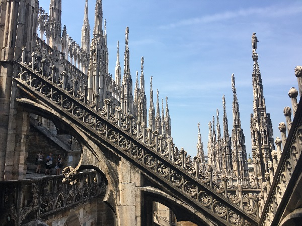
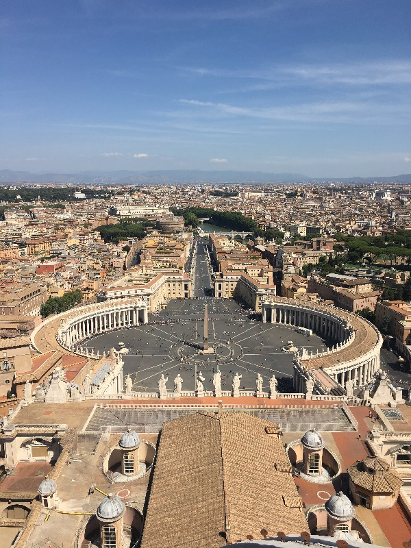
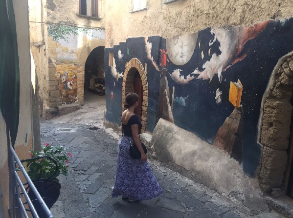
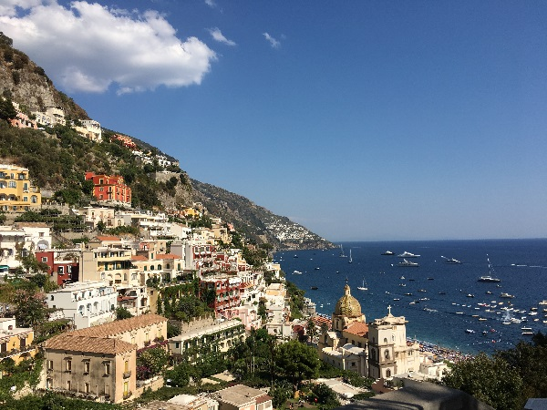
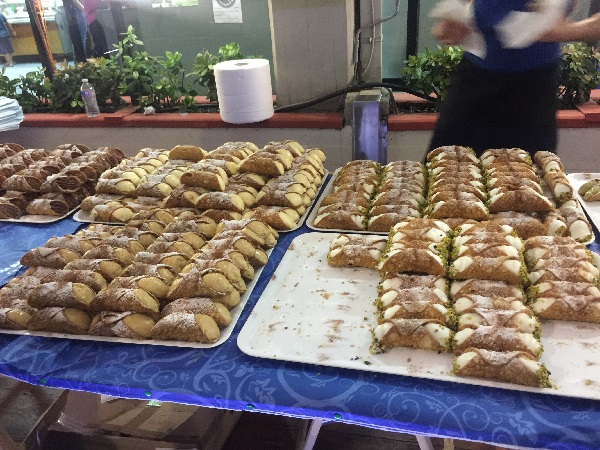
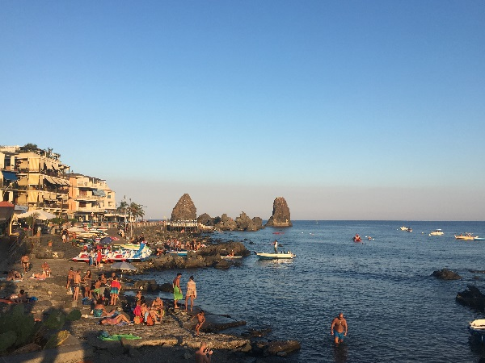
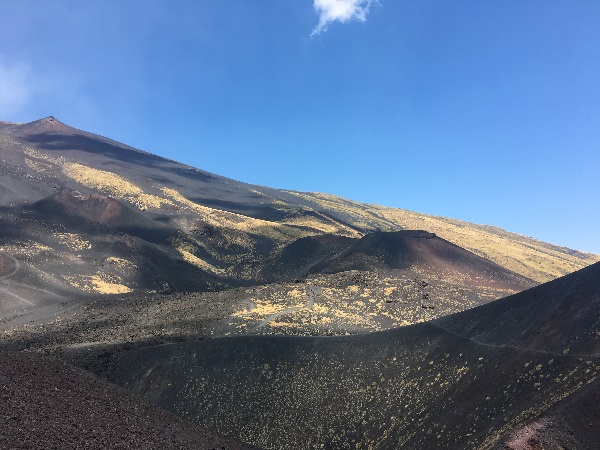
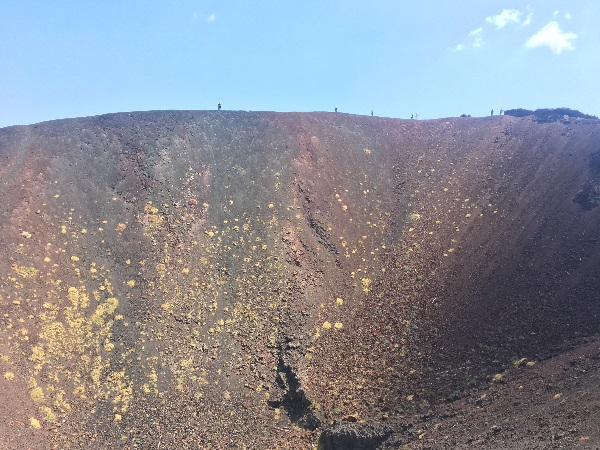

In August 2017 I went on a road trip with my Italian friend who now lives in Germany. We rented a car
and drove from southern Germany, through Switzerland, and down through Italy, onto a ferry to Sicily.
Milan

Milan Cathedral
Rome

View from the top of St. Peter's Basilica
Campania

Murals tucked away in the mountain village of Campania. My friend and I spent the
day with her aunt who showed us around the quiet town. The mountain air offered a welcome breeze
and respite from the summer heat.
Positano

Positano, Italy
It's nearly impossible to pick a favorite part of Italy, but Positano might be the one for me.
Sicily
Catania

Yes, there is a cannoli festival. In Catania. EVERY SUMMER.
Aci Castello
Black sand at the volcano, Mount Etna
Mount Etna